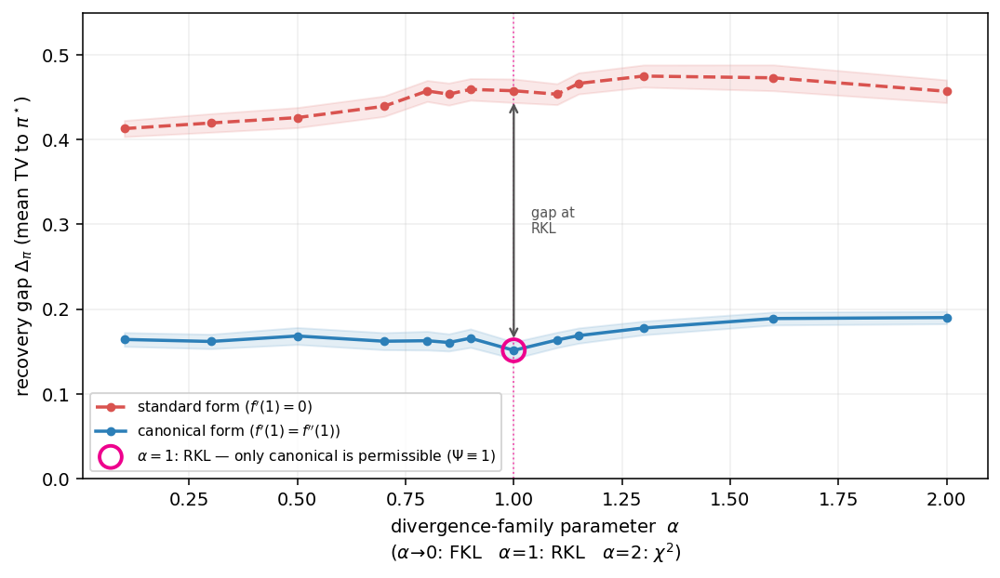

📐 왜 실험은 $\Phi$ 상수를 요구하나 — plug-in 추정기
한 줄 답
실험의 inner항은 plug-in
trajectory score의 내부항은 각 전이에서 한 개의 로그 행동 $a'_t$로 $\;\hat C_t=\Phi(u_{a'_t})$를 쓰고, 선호차는 $d=\text{score}_w-\text{score}_l$입니다. $C_\Omega=\mathbb{E}_{a\sim\pi}[\Phi]$를 해석적으로 알지 못하고(정책·적분 필요) 데이터로 대체하는 게 핵심.
같은 KL, 두 표현 — plug-in의 차이 (뾰족한 $\pi_\theta=[0.8,0.15,0.05]$)
| 표현 | $\Phi(u)$ at $u{=}[2.4,0.45,0.15]$ | 참 $C_\Omega=\mathbb{E}_\pi[\Phi]$ | off 단일샘플 $\mathbb{E}_{\rm unif}[\Phi]$ | $\mathrm{Var}$ |
|---|---|---|---|---|
| 표준 KL ($\Phi=1$) | $1,\ 1,\ 1$ | $1.000$ | $1.000$ (정확) | $0$ |
| shifted KL ($\Phi=1-\tfrac1u$) | $0.58,\ -1.22,\ -5.67$ | $0.000$ | $-2.10$ (편향) | $6.90$ |
둘은 같은 divergence(같은 $\pi^\*$, $C_\Omega$ 둘 다 상수)인데, 표준은 모든 로그행동에서 $\hat C=1$로 정확·무분산, shifted는 $\hat C$가 행동마다 $\{0.58,-1.22,-5.67\}$로 요동 → 참값($0$)과 무관하게 편향 $-2.1$·분산 $6.9$. 이 잡음이 winner/loser 비대칭으로 $d$에 들어가 잘못된 정책으로 수렴 → 성능 악화.
두 레벨로 정리
| $C_\Omega$ 상수 | $\Phi$ 상수 | |
|---|---|---|
| 무엇을 말하나 | 어떤 divergence가 admissible | 그 divergence의 plug-in 추정기가 정확 |
| 정규화 | 불변 (invariant) | 표현 의존 ($\mu=0$ 대표원) |
| 고르는 것 | reverse-KL (유일) | reverse-KL의 canonical 표현 |
요컨대: "$C_\Omega$ 상수"는 원리(이론), "$\Phi$ 상수"는 그 원리를 로그 데이터 한 샘플로 정확히 실현하는 조건(실험). admissibility의 실험적 이득(noise-free inner term)은 $\Phi$-상수 표현에서만 나옵니다.
📐 admissibility의 옳은 조건 — $C_\Omega$ 상수 vs $\Phi$ 상수
한 줄 답
| divergence | $\mathrm{std}_\pi[C_\Omega]$ | $\Phi$ 상수? |
|---|---|---|
| KL ($f=u\ln u$, 표준) | 1.5e-16 | ✅ $\Phi=1$ |
| KL ($f=u\ln u-(u-1)$) | 1.7e-05 | ❌ $\Phi=1-1/u$ |
| α-div ($a=0.5$) | 0.117 | ❌ |
| JS / χ² | 0.039 / 0.32 | ❌ |
같은 KL인데 정규화만 다른 두 표현이 둘 다 $C_\Omega$ 상수(값만 1 vs 0)이고 $\Phi$는 한쪽만 상수 — 이것이 전부를 말해줍니다.
Q2. $f'(1)=0$의 정체 — 필수가 아니라 convention
f-divergence는 생성자의 affine 이동 $f\to f+c(t-1)$에 불변입니다: $\sum_a\rho_a(u_a-1)=\sum_a\pi_a-\sum_a\rho_a=0$. 이 1-파라미터 자유도에서 대표원 하나를 고르려고 흔히 $f(1)=0,\ f'(1)=0$을 씁니다(그러면 $f\ge0$, 최소가 $t=1$인 "예쁜" 볼록함수). Amari α-div가 이 관례를 따를 뿐 — 다른 affine 대표원을 써도 divergence는 동일합니다. $f'(1)=0$은 요구조건이 아닙니다.
Q1. B3에 $f'(1)=0$을 넣으면? — 표준 대표원이 나오고 $\Phi$는 비상수
B3의 해 $f(u)=k\,u\ln u+c+A\,u$에 $f(1)=0$은 $A=-c$를 줬습니다. 여기에 $f'(1)=0$을 더 넣으면:
즉 $f'(1)=0$은 정확히 a→1 극한이었던 표준 대표원(Φ 비상수)을 줍니다. 반대로 상수-$\Phi$ 대표원은 $c=0$ (즉 $f=k\,u\ln u$, $f'(1)=k\neq0$, $\Phi\equiv k$). 둘은 같은 reverse-KL의 affine 표현 차이일 뿐 — 적용해도 되지만 그러면 $\Phi$가 상수가 아니게 됩니다.
Q3. 왜 $\Phi$ 상수가 아니라 $C_\Omega$ 상수가 옳은가
내부항 $C_\Omega(\pi)=\sum_a \pi_a\,\Phi(u_a),\ u_a=\pi_a/\rho_a$. 단체(simplex) 위에서 $C_\Omega$가 모든 $\pi$에 대해 상수일 조건은 모든 좌표 편미분이 같아야 함:
그리고 $\Phi=\lambda+\mu/u$를 ODE로 풀면(B3와 동일) divergence $=\lambda\,u\ln u$ = (배율) reverse-KL, 유일입니다.
당위 — 왜 그것이 admissibility인가 (상쇄 메커니즘)
$C_\Omega(\pi(\cdot|s'))$가 정책무관 상수이면 trajectory score의 inner 합이 $\sum_t C_\Omega(s_{t+1})=(H-1)\cdot\text{const}$ — 같은 길이의 winner·loser에서 동일하므로 선호차 $d=\text{score}_w-\text{score}_l$에서 상쇄됩니다. 즉 추정이 아예 필요 없고 데이터 정책과 무관하게 off-policy-정확. $\Phi$의 단일샘플 추정기 $\hat C=\Phi(u_{a'})$는 이 상수를 "추정"하는 한 방법일 뿐이고, $\mu\neq0$ 표현에선 $\mathbb{E}_{\text{behave}}[\Phi]\neq\mathbb{E}_\pi[\Phi]$로 편향 — 그래서 α-div 스윕이 정규화에 취약했던 것입니다.
함의 (코드·논문)
현재 is_admissible은 $\mathrm{Var}_a[\Phi]=0$($\Phi$ 상수, 정규화 의존)을 봅니다.
invariant 판정은 $\mathrm{std}_\pi[C_\Omega]=0$(동치: $\Phi(u)=\lambda+\mu/u$)로 두는 게 옳습니다 —
KL을 어떤 정규화로 적든 일관 admissible로 판정되고, α-div 스윕도 $\mathrm{std}_\pi[C_\Omega]$ vs $a$로 그리면
정규화 무관하게 깨끗한 곡선($a\neq1$에서 진짜 non-zero)이 됩니다.
📐 Tabular 재현 실험 정리 + α-div 정규화 분석
A. 지금까지 한 것 (재현 파이프라인 + 결과)
재현성 우선: 기존 run_part3.py는 전역 RNG 하나라 셀이 순서 의존·재현 불가였습니다.
seeds.rng_for(root, role, *key)로 난수 단위마다 독립 스트림을 유도(ROOT_SEED=20260629) →
셀 단독 재현·순서 무관. 설계는 100개 독립 MDP × 1 학습(design A): 각 seed가 i.i.d. 표본이라 평균±CI가 정직.
| 실험 | 축 | 핵심 결과 |
|---|---|---|
| 헤드라인 §4.3 | regime × Ω × n_mc | off: KL 0.14 vs 나머지 0.37–0.44; off_on/on: KL 평탄, 비-KL은 n_mc↑로 수렴 |
| peak ablation | peak ∈ {0.6,0.7,0.8} | KL이 모든 peak 최저; 분리폭 peak와 함께 ↑ |
| ε ablation | ε ∈ {0…0.5}, α 고정 | KL이 모든 ε에서 평탄·최저 (전이노이즈 무관) |
| seed 수 | n=10 vs 100 | CI ∝ 1/√n; 분리는 n=10에서도, 평탄성(null)은 ~100 필요 |
| §4.2 메커니즘 | n_mc, horizon H | ΦKL≡1 ⇒ std 정확히 0; 비-KL은 single-state ∝1/√n, traj ∝√(H−1) |
| α-div 스윕 | 파라미터 a | 아래 — 정규화 이슈 발견 |
B. 셋업과 기호
참조정책 ρ=πref, ua=πa/ρa. f-divergence와 그 내부항(inner term):
off-policy 추정기는 행동정책에서 뽑힌 단일 logged a′로 $\hat C=\Phi(u_{a'})$를 씁니다. 이게 편향 없으려면 모든 π·행동정책에 대해 Φ가 상수여야 합니다(그래야 $\mathbb{E}_{\text{behave}}[\Phi]=\mathbb{E}_\pi[\Phi]=\text{const}$). 이것이 admissibility ⇔ Φ 상수.
B1. f-divergence의 affine 자유도 — Ω는 불변, Φ는 변한다
임의의 상수 c에 대해 $\tilde f(t)=f(t)+c(t-1)$로 바꿔도 divergence는 그대로입니다:
따라서 Ω·최적정책 $\pi^\star$·Bregman gap은 affine 항에 완전히 불변입니다. 그런데 inner 적분항 Φ는 다릅니다:
즉 affine 이동은 Φ를 +c/u만큼 (u-의존적으로) 옮깁니다. 참고로 참 inner항은 상수만큼 이동: $\;C_{\tilde\Omega}=\mathbb{E}_\pi[\Phi+c/u]=C_\Omega+c\sum_a\pi_a\frac{\rho_a}{\pi_a}=C_\Omega+c$ (그래서 동일 깊이 trajectory의 선호차 d에선 상쇄 — 참 결과는 정규화 무관, off-policy 단일샘플 추정기만 c/u 때문에 정규화에 민감).
B2. 왜 c=1인가
Amari α-divergence의 표준 생성자는 f_a(1)=f_a'(1)=0으로 정규화됩니다:
반면 canonical KL(우리가 admissible이라 부르는 것)은 $f_{\rm KL}(t)=t\ln t$ ($f_{\rm KL}'(1)=1$, $\Phi_{\rm KL}\equiv 1$). 둘의 차이는
그래서 canonical KL을 회복하려면 +(t-1), 즉 c=1을 더해야 합니다. c가 a에 무관하게 1인 이유: 표준 α-div 군은 모든 a에서 균일하게 f_a'(1)=0이고, 우리는 정규화 규약을 $\tilde f'(1)=1$로 못박습니다. $\tilde f'(1)=f_a'(1)+c=0+c$이므로 c=1 — 군 전체에 같은 상수.
B3. α-div가 아닌 divergence — 일반적으로 가능한가?
affine 재정규화로 어떤 divergence를 admissible(상수 Φ)로 만들 수 있나? 조건은 $\Phi(u)+c/u=k$, 즉 $\Phi(u)=k-c/u$ 형태여야 합니다. 이를 만족하는 생성자를 ODE로 풀면 (u f'-f=ku-c):
-c(u-1)은 affine 항(divergence 무관)이므로 그 divergence는 $k\,u\ln u$ = 배율 곱한 reverse-KL입니다. 결론:
B4. 함의 — α-div 스윕은 정규화 의존적
수정 전(표준 f'(1)=0)은 a=1에서만 급락하는 가짜 knife-edge를, 수정 후(f'(1)=1, kl_norm)는 부드러운 well을 줍니다.
둘 다 Ω·π^\*는 동일하고 inner-term 추정기만 다릅니다.

다만 Φ(따라서 off-policy bias·"admissibility")가 생성자 정규화에 의존하므로, α-div 파라미터 스윕의 모양은 규약 선택의 산물입니다.
규약 무관하게 깨끗한 admissibility 주장은 7-divergence 헤드라인 + §4.2 메커니즘(각 divergence 표준형, reverse-KL만 상수-Φ)에 두는 것을 권합니다.
구현: regularizers.make_adiv(a, kl_norm=True)가 +(t-1) 이동을, train_one(reg=…)가 커스텀 regularizer 학습을 담당.
▶ 실험 돌리는 법 (VSCode / 터미널)
브라우저는 Python을 직접 못 돌립니다(기존 JS suite는 JS라서 가능했던 것). 대신
VSCode에서 스크립트를 돌리면 figs/*.png + results_data.js가 갱신되고,
이 페이지를 새로고침하면 “라이브 결과”에 자동 반영됩니다.
cd python python run_part3.py # 전체 Part-3 실험 (~3분) → figs/part3_*.png + results_data.js QUICK=1 python run_part3.py # 빠른 스모크 (2 seeds / 80 steps) python verify.py # 7개 수치 검증 (전부 PASS여야 함)
VSCode: run_part3.py 열고 ▷(Run Python File) 또는 ⌃/⌘+F5.
파라미터(SEEDS, STEPS, NMCS, EPS, DEPTH, TARGET)는 run_part3.py 상단에서 수정.
α-divergence의 a는 regularizers.DEFAULT_ADIV_A(기본 0.5) 또는 make_adiv(a)로.
왜 HTML에서 바로 못 돌리나?
정적 HTML에서 numpy를 돌리려면 Pyodide(WASM)를 얹어야 하는데 느리고 무겁습니다. “VSCode에서 돌리고 HTML에 반영” 루프가 가볍고 디버깅도 쉬워 이 방식으로 구성했습니다. 원하면 Pyodide 버전도 가능.
⚙ DPO 학습 세팅
① 정책 파라미터화 (네트워크)
| 형태 | tabular softmax (신경망 아님) — 상태별 logit 벡터 |
| 파라미터 θ | shape (depth, states, actions) = (4, 3, 3) = 36개 logit |
| 정책 | πθ(·|s) = softmax(θ[ℓ,s], temperature = 1) |
| 초기화 | θ ~ Uniform(−0.05, 0.05) |
② 옵티마이저 / SGD
| optimizer | Adam (bias-corrected, dpo.py 직접 구현) |
| β₁ / β₂ / ε | 0.9 / 0.999 / 1e−8 |
| learning rate | 0.08 |
| batch size | 16 preference-pair / step |
| steps | 300 |
| seeds | 5 (막대 ± seed std) |
③ 손실 / 목적함수
| loss | trajectory-DPO: ℓ = −log σ(d), d = score(τw) − score(τl) |
| score(τ) | Σt α·[∇Ω(π(·|st))]at + Σt α·ĈΩ(π(·|st+1)) (β(s) 항은 차분에서 상쇄) |
| βDPO | 1 (d를 σ에 직접) |
| inner-term gradient | mode A (faithful): ∂ĈΩ/∂θ를 같은 a′ 샘플로 Φ′ 통해 역전파 |
| inner samples n_mc | §4.3에서 {1,2,4,…,256} 스윕. on/off 모두 a′~π(·|s′)에서 n_mc개 재샘플(같은 per-step MC budget). KL은 Φ≡1이라 n_mc 무관·noise 0. |
④ 데이터 / 선호 oracle
| N_pairs | 6000 선호쌍 |
| oracle | Bradley–Terry, raw 할인 리턴 기준 (temp 1) |
| 데이터 정책 (§4.3) | on-policy = π*_Ω 롤아웃 (divergence별) · off-policy = π_ref(uniform) 롤아웃 |
⑤ 환경 (MDP)
| 구조 | layered MDP · depth=4 · states/layer=3 · actions=3 |
| 전이 | ε-stochastic, ε=0.2 (목표 상태 1−ε, 나머지 균등) |
| 보상 | Uniform(−0.8, 0.8), 모든 (ℓ,s,a) |
| γ (할인) | 0.9 |
| π_ref | action에 대해 uniform (기본) |
| α (정규화 가중) | divergence·peak 별로 보정 — 라이브 결과 표의 α 열 참조 |
바꾸려면: 학습은 dpo.py의 TrainConfig(lr·batch·steps·grad_mode), 규모는
run_part3.py 상단(SEEDS·STEPS·NPAIRS·PEAKS·BATCH·EPS·DEPTH).
📊 라이브 결과 — Part 3 (Off-Policy Admissibility)
python run_part3.py를 먼저 실행하세요.§4.3 구현 — Δπ vs n_mc (on=π*_Ω, off=π_ref) + inner 벡터화
핵심: §4.3의 on/off는 "데이터 정책" 구분
논문 §4.3에서 on-policy = 선호 데이터를 각 Ω의 π*_Ω에서 롤아웃, off-policy = π_ref(uniform)에서 롤아웃입니다.
inner term은 양쪽 다 n_mc개 샘플을 π(·|s′)에서 재샘플(같은 per-step MC budget). — 이전 라운드의 "단일 logged a′" off-policy와는 다른 정의라,
dpo.make_dataset_policy(π*_Ω 롤아웃)를 추가하고 off-policy 의미를 데이터 정책으로 교체했습니다.
실험 설계 (Fig 5 재현)
각 peak에서 n_mc ∈ {1,2,4,8,16,32,64,128,256} 스윕, on/off 2-panel, Δπ vs n_mc에 ±1σ 밴드. peak 토글로 0.6/0.7/0.8 전환. KL은 n_mc에 평탄·최저, 비-KL은 n_mc↑에서 감소(inner-term MC 노이즈가 budget으로 줄어듦).
n_mc=256을 위한 벡터화
기존 draw_inner·inner gradient는 n_mc에 대해 Python 루프라 n_mc=256이 매우 느렸습니다.
numpy로 벡터화(샘플 일괄 추출 + np.add.at scatter)해 n_mc=256이 n_mc=1과 거의 같은 속도(0.29s vs 0.23s)가 됐습니다.
수학적으로 동일(scatter+pol·Σ = 원래 이중 루프), verify.py 8 PASS 유지.
왜 처음엔 KL이 안 갈렸나 (JS와 비교 진단)
JS 결과(KL이 뚜렷이 분리)와 안 맞아 진단한 결과, 포팅은 JS와 동일(버그 아님)이었고 분리가 안 보인 건 설정 탓이었습니다:
- N_pairs·steps 부족 — N_pairs=600·steps=300이면 데이터·수렴 한계로 모두 ~0.2에 묶임. KL이 비-KL 노이즈 바닥 아래로 수렴하려면 N_pairs=6000 + steps=400 필요.
- π* 데이터는 탐색 부족 — on-policy(π* 롤아웃)는 한쪽으로 집중돼 수렴이 나쁨. uniform(π_ref) 데이터가 모든 행동을 탐색해 KL이 잘 수렴(off-policy 패널이 더 깨끗).
- Δπ는 균등가중 TV(JS와 동일)로 되돌림. occupancy 가중은 χ²/Euc 경계 문제를 오히려 키웠음.
- 여러 MDP 평균(논문의 leaf-reward draws처럼)으로 밴드를 깨끗하게.
§4.2 single-state + trajectory 분산을 전역 결과로 · c(s′)·morph 제외
논문 §4.2 두 실험 구현 (학습 없이 분산 측정)
Single-state (Fig 3): 한 상태, |A|=100, π_ref uniform, π=softmax(N(0,1)×3) (peak≈0.24). n∈{2²…2¹⁰}에 대해 n-샘플 Φ-form 추정량 Ĉ_Ω의 mean·std를 500 draw로 측정. KL은 모든 n에서 mean=1·std=0, 비-KL std는 1/√n로 감소.
Trajectory (Fig 4): peaked policy(peakedness=scale 1.0), n_mc=8, H∈{1…8}. horizon-H는 H−1개의 독립 inner-term draw를 implicit reward에 더하므로, 합 S=Σt Ĉ_Ω의 per-trajectory std가 비-KL은 √(H−1)로 누적, KL은 0. 검증: adiv std 비율 1.0/1.43/2.01/2.64 ≈ √(H−1) 1.0/1.41/2.0/2.65, KL std≈1e-16(=0), KL 합(H=8)=7.0=exact.
inner_term.single_state_variance / trajectory_variance.중요: §4.2는 α·peak가 아니라 “같은 π” 기준
§4.2는 학습을 하지 않습니다. 모든 divergence가 동일한 고정 정책 π(softmax of N(0,1)·scale, 같은 seed)를 공유하고,
그 π에 각자의 Φ/C_Ω만 적용해 추정량 분산만 비교합니다. α도, peak 캘리브레이션도, solve_dp도 호출하지 않습니다.
(검증: 7개 divergence가 보는 π가 np.array_equal=True.) — 반면 per-peak 패널(라이브 결과 토글)은 학습 실험이라 divergence별 peak-calibrated α를 씁니다. 의도적으로 분리된 설정입니다.
제외한 것
전역 결과에서 c(s′) probe와 α-divergence morph를 뺐습니다(요청). 코드(fig_cprobe,
fig_adiv_morph, make_adiv)는 남아 있어 언제든 재생성·복귀 가능합니다.
N_pairs 600 → 6000 · 우측 폭 활용 · Euclidean
지금까지 쓴 preference data + 늘린 이유
직전까지 N_pairs = 600(2000개 중 600개)을 썼습니다. 말씀이 맞습니다 — 데이터가 많을수록 KL이 유리해집니다. 이유: preference 데이터가 적으면 데이터 추정 노이즈가 지배적이라 divergence 차이를 가립니다. 데이터가 많아지면 그 노이즈가 줄고, 그러면 비-KL의 inner-term MC 노이즈(n_mc=1)가 상대적으로 드러나 KL의 noise-free 우위가 보입니다. JS의 N_pairs→10000 추세와 같은 원리입니다.
run_part3.py의 NPAIRS),
steps도 300으로 올렸습니다. 라이브 패널 상단 메타에 N_pairs가 표시됩니다.
더 키우려면 NPAIRS만 바꾸면 됩니다.결과(확인됨): N_pairs=600일 땐 Euc가 자주 이겼지만, 6000으로 늘리니 6개 케이스(3 peak × on/off) 전부 KL이 최저가 됐습니다 — 예: peak 0.8에서 KL on/off = 0.188/0.197, 차순위 Euc 0.213, 최악 RKL 0.325. 데이터 노이즈가 줄자 KL의 admissibility 우위가 또렷해진 것.
Euclidean이 잘하는 이유
squared Euclidean은 정규화가 단순한 2차식이라 최적화 지형이 매끄럽고 softmax로 fit이 쉽습니다. 작은 데이터·toy MDP에선 이 “쉬움”이 inner-term 노이즈 손해를 상쇄해 자주 최저 갭을 냅니다. 하지만 Euclidean도 admissible은 아닙니다(C_Ω 분산 > 0) — 데이터/off-policy를 키우면 KL과의 격차가 좁혀지거나 역전됩니다. admissibility의 깨끗한 신호는 갭이 아니라 C_Ω 분산=0(KL만)임을 다시 강조합니다.
우측 공간 활용
content 폭 제한을 풀어 라이브 결과 페이지는 화면 전체 폭(≤1600px)을 쓰고, figure 썸네일 그리드가 가로를 채우도록 했습니다(글 페이지는 가독성 위해 940px 유지).
off-policy 패널 + peak·x축 설명 + 그림 축소
peak 가 정확히 뭔가
peak = 캘리브레이션 타깃 = 평균s[ maxa π*(a|s) ] — 최적 정책 π*가 각 상태에서 한 행동에 얼마나 몰려있는지(뾰족함)의 상태 평균입니다. peak=0.6이면 평균적으로 최적 행동이 ~0.6 확률을 가짐. divergence마다 geometric scale이 달라 같은 α에서 뾰족함이 제각각이라, α를 divergence별로 보정해 모두 같은 peak를 갖게 맞춥니다(공정 비교 — 그래서 α가 Ω마다 다름).
정책패널 x축이 뭔가 (Image #3)
x축 = 정책을 한 줄로 편 인덱스. DEPTH(4)×SN(3)×NA(3)=36개 항목. 각 점 = 특정 (layer ℓ, state s, action a)에서의 π(a|s) 값. 점선=π*(타깃 정책), 실선=π_θ(DPO 학습 정책). 세로 구분선=layer 경계이고 이제 ℓ0~ℓ3 라벨을 달았습니다. 두 선이 겹칠수록 정책 복원이 잘 된 것. (한 layer 블록 안 9개 = state 3 × action 3.)
off-policy 정보 추가
이제 각 peak에서 off-policy도 on-policy와 동일하게 학습곡선 · π* vs π_θ 패널을 제공합니다 (라이브 패널의 썸네일 그리드에 on/off 나란히). 표에는 on 갭과 off 갭을 함께 표기.
그림 축소 (한눈에)
모든 그림을 작은 썸네일 그리드로 바꿔 한 화면에 들어오게 했습니다. 썸네일 클릭 시 원본을 새 탭에서 엽니다. matplotlib 소스 그림 크기도 줄였습니다.
정직한 결과 (재확인)
이 toy MDP에서 최종 정책갭은 노이즈가 커서 KL이 항상 최저는 아닙니다(Euc가 자주 최저). admissibility의 깨끗한 신호는 C_Ω 분산 = 0 (KL만) — C_Ω 통계·single-state 패널에 직접 드러납니다.
α-div 파라미터화 + eq15 제거 + 2분할 UI
① 좌측 git-tree · 페이지 전환
이 페이지가 그 결과입니다. 좌측 노드를 클릭하면 해당 라운드/페이지만 우측에 표시됩니다(누적 스크롤 제거).
② eq15 제거 — Φ-form만
C_hat_eq15와 관련 패널/그림/문서를 전부 삭제했습니다. 학습·통계·그림 모두
유일한 추정량인 Φ-form Ĉ=(1/n)Σ Φ(uaᵢ) 만 사용합니다.
KL은 매 샘플 Φ를 평가하고 그 값이 산술적으로 1 → 분산 0(verify.py CHECK 5).
③ α-divergence 파라미터화 (기본 = KL과 RKL 사이)
α-div를 Amari 족 fa(t)=(ta−a·t+a−1)/(a(a−1))로 일반화.
기본값 a=0.5(중간)로 두었고, make_adiv(a)로 임의 a
(regularizers.DEFAULT_ADIV_A). 확인: a=0.5의 C(π*)=−0.186으로
RKL(−1.353)과 KL(+1.000) 사이.
④ α-div morph — 같은 α에서 a를 넓게 스윕 (RKL→Hellinger→KL→χ²)
고정된 α에서 α-div 파라미터 a를 0→2로 넓혀 π*를 (layer,state,action) 인덱스 위에 그렸습니다.
색은 RKL·KL 색을 앵커로 한 gradient(a=0 보라→a=1 핑크→확장), 범례에 각 a가 어떤 divergence로 recover되는지 표기.
ground truth는 그리지 않음.
(α-div morph 그림은 r8에서 전역 결과에서 제외했습니다 — run_part3.py의 fig_adiv_morph로 언제든 재생성 가능.)
Part 3 전체 실험 + 공정성 (Φ를 f, f′에서 계산)
공정성 — Φ를 리터럴로 박지 않음
Phi = lambda u: 1.0 같은 리터럴을 제거하고
Φ(u)=f′(u)−f(u)/u, Φ′(u)=f″(u)−f′(u)/u+f(u)/u²를
모든 Ω에 대해 f, f′, f″로부터 계산합니다. KL은 그 산술이 1로 떨어질 뿐 —
검증: generic 계산이 기존 명시식과 ~1e-15 일치, Φ_KL=1, Φ′_KL≈1e-15(리터럴 0 아님).
Part 3 전체 실험 — run_part3.py
JS Part 3 lab의 모든 패널 재현: α–peak 스윕 · C_Ω 통계 · 학습곡선 · 정책갭 막대 · π* vs π_θ · extreme off-policy · single-state std. 결과는 📊 라이브 결과 페이지에 표시됩니다.
실험 검증 + 왜 KL은 0-분산인가
검증 — verify.py 7개 체크 PASS
argmax stationarity, 추정량 무편향, admissibility 경험 판정, Φ 상수성, Φ-form 분산, solver 불변량, 비균일 ref —
모두 통과(코드 수정 후 python verify.py가 회귀 테스트).
왜 KL은 0-분산인가 (Φ-form)
내부항 CΩ=Ea~π[Φ(ua)], Φ=f′−f/u. KL은 Φ(u)=(ln u+1)−ln u=1 이 모든 u에서 상수라, 매 샘플이 1 → 분산 0. “항상 샘플하지만 값이 일정”이 그대로 구현된 것이고, 상수를 박은 게 아니라 산술의 결과입니다. non-KL은 Φ가 u에 따라 변해 Varπ[Φ]/n > 0 — 이게 C_Ω 통계·single-state 그림에 드러납니다.
(이전 라운드에서 다룬 “eq15(Ω 동결)면 KL도 분산” 얘기는 헷갈림 방지를 위해 코드/문서에서 제거했습니다. 학습 추정량은 Φ-form 하나.)
const_C 하드코딩 제거 + π_ref 일반화
const_C 제거 — admissibility는 emerge
const_C 플래그와 if KL: … 분기를 전부 제거. KL도 동일 경로를 타고,
무잡음성은 Φ_KL≡1, Φ′_KL≡0 에서 도출. is_admissible가
Vara[Φ]≈0 을 경험적으로 검사 → KL만 True.
π_ref 일반화
모든 함수가 ref=None(uniform) 인자를 받고 u=π/ref로 동작.
argmax는 임의 ref에서 도는 단일 ν-bisection 솔버로 통합. None/(NA,)/(depth,SN,NA) 수용.
검증: 비균일 ref에서도 C_KL=1.
JS → Python 포팅 + c(s′) 검증
math.js + task3-admissibility.js를 Python 패키지로 포팅
(regularizers / mdp / inner_term / dpo / run_part3).
c(s′) “변형” = c_violation
Eq 16이 action-indexed 내부량을 상태함수 c(s′)로 접는 건 s′가 생성 행동을 식별할 때(ε=0)만 유효. ε>0이면 post(a|s′)∝πb(a)P(s′|a)의 사후 분산이 새며, 그 RMS를 ε에 대해 잰 것. 검증: violation(0)=0, violation(0.2)=0.293.
(c(s′) probe 그림은 r8에서 전역 결과에서 제외했습니다 — fig_cprobe로 재생성 가능.)